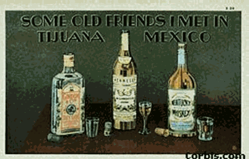
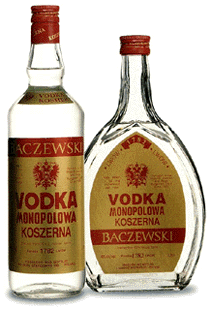
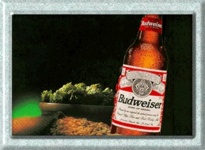

| Contents | Terminology | Alcohol | Effects | Hangovers | Alcoholism | Development | Treatment | Others |

Alcohol is the term applied to members of a group of chemical compounds and, in popular usage, to the specific compound ethyl alcohol, or ethanol. The Arabic word denotes kohl, a fine powder of antimony used as an eye makeup. The word alcohol originally denoted any fine powder; the alchemists of medieval Europe later applied it to essences obtained by distillation, and this led to the current usage.
Classes of alcohol:
Alcohols are a class of organic compounds containing the hydroxyl group, OH, attached to a carbon atom. Alcohol’s have one, two, or three hydroxyl groups attached to their molecules and are thus classified as monohydric, dihydric, or trihydric, respectively. Methanol and ethanol are monohydric alcohols. Alcohols are further classified as primary, secondary, or tertiary, according to whether one, two, or three other carbon atoms are bound to the carbon atom to which the hydroxyl group is bound. Alcohols, although analogous to inorganic bases, are neither acid nor alkaline. They are characterized by many common reactions, the most important of which is the reaction with acids to form substances called esters, which are analogous to inorganic salts. Alcohols are normal by-products of digestion and chemical processes within cells and are found in the tissues and fluids of animals and plants.
Absorbtion and distribution:
When an alcoholic beverage is swallowed it is diluted by the stomach juices, and is very quickly distributed throughout the body. Alcohol does not require digestion before its absorption into the bloodstream. A small portion is diffused into the bloodstream directly from the stomach wall.
Intoxication:
The drinking of small amounts
of alcohol, even if this is done regularly over a long period of time,
does not have any conclusively demonstrated pathological effect. A mild
infrequent intoxification produces a variety of temporary biochemical disturbances
in the body. But these changes leave no chronic after effects, and the
body rapidly returns to normal. A severe intoxication may produce more
serious disturbances, including a temporary imbalance of the body chemistry.

Effects of
alcohol
Alcohol is also a mood altering
drug, which has both physical and mental effects on the body. The irritating
effects of alcohol, especially in undiluted strong beverages, can result
in damage to the tissues of the mouth, esophagus and stomach, perhaps with
increased susceptibility to cancer. The liver is likely to suffer serious
damage if it must cope lengthily with the detoxication of large amounts
of alcohol. There may also be damage to the heart muscle.